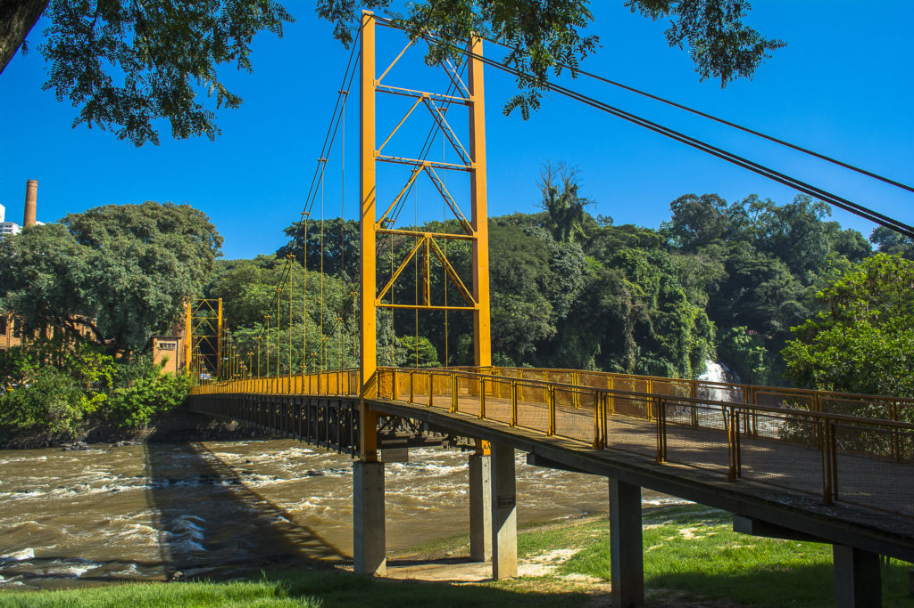
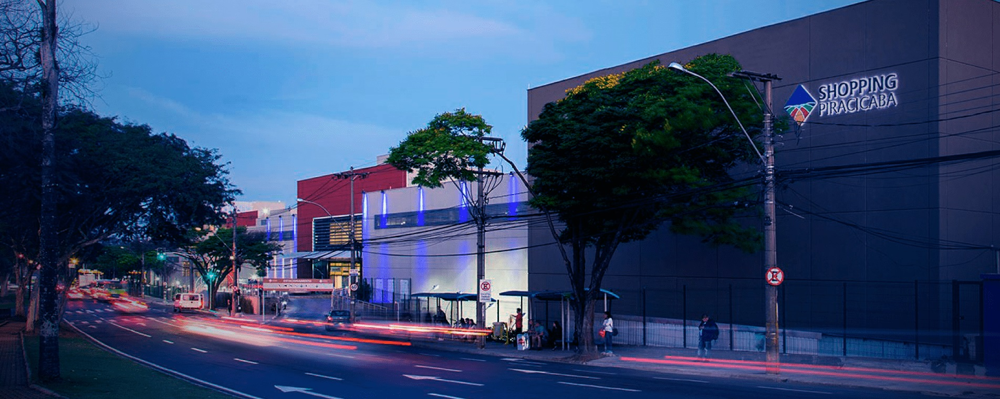
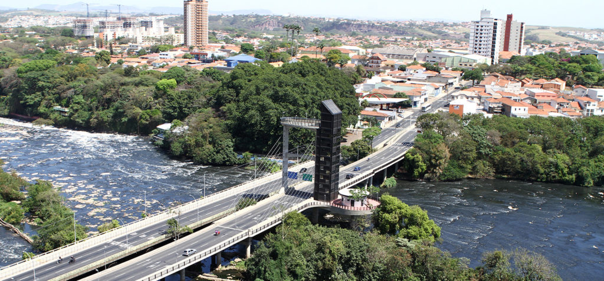
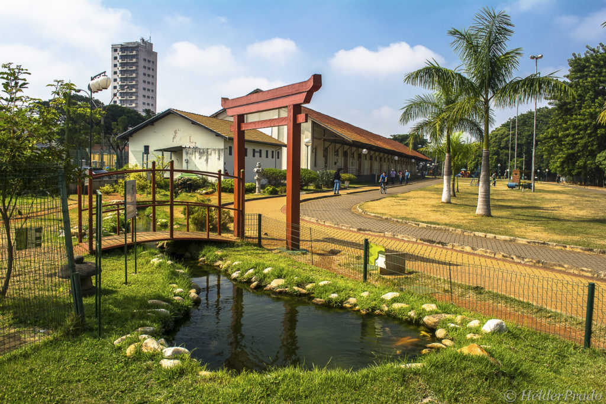
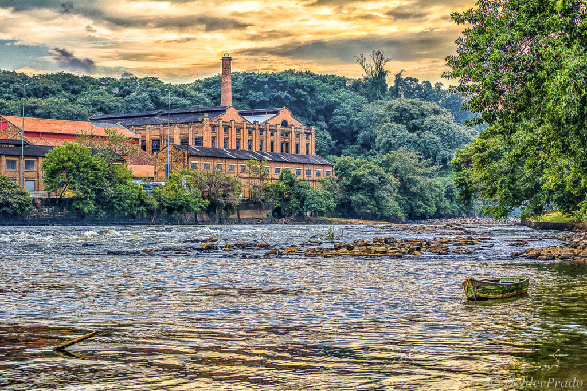

Zoológico
O Zoológico Municipal de Piracicaba abriga aproximadamente 422
animais, sendo 283 aves divididas em 70 espécies; 86 exemplares de
mamíferos divididos em 30 espécies; e 53 répteis, divididos em 10
espécies; além de animais exóticos. Para abrigá-los foram
construídos recintos que reproduzissem seus habitats de origem,
garantindo o bem-estar dos animais.
Ponte Pênsil

A Passarela Pênsil, inaugurada em 15 de dezembro de 1992, possui
103 metros de extensão (de uma ponta a outra) e 78 metros de vão
suspenso. É considerada uma obra de arte da engenharia, cujo
projeto inicial foi inspirado nas pontes norte-americanas Brooklin
Bridge (NY) e Golden Gate (São Francisco, CA).
Shopping Piracicaba

Com 35 anos de história, é considerado o maior e mais completo
centro de compras e entretenimento da região. Possui 280 lojas, as
quais reúnem marcas consagradas que compõem um panorama completo
de tendências e um mix de serviços completos. Com 2 praças de
alimentação, 5 restaurantes, 7 salas de cinema com opções em 3D e
um ambiente climatizado, se destaca em lazer e entretenimento para
toda a família. Além disso, possuí uma sede da Polícia Federal
para emissão de passaportes.
Elevador Turístico

O Elevador Turístico “Alto do Mirante” inaugurado em 2013 se
encontra sobre a Ponte Caio Tabajara Esteves de Lima, entre as
ruas Renato Wagner e Juscelino Kubistchek de Oliveira. Possuí
vista privilegiada do Rio Piracicaba e da cidade, a 24 metros de
altura.
Estação da Paulista

Inicialmente surgiu com a idealização da linha ainda no século
XIX, com a intenção de ligar a cidade de Limeira a Piracicaba, mas
somente em 1916 começou a ser construída pela Companhia Paulista
de Estradas de Ferro. O ramal saia de Recanto, uma pequena estação
próxima à cidade de Nova Odessa. Em 1917, a linha percorreu até
Santa Bárbara d’Oeste e estacionou em 1922 até se prolongar à
estação terminal de Piracicaba Paulista — ano em que a Estação da
Paulista foi inaugurada, depois de vinte anos de espera e
promessas da construção do ramal pela Companhia Paulista. Na época
o terreno foi doado por João Baptista da Rocha Conceição (médico e
ex-vereador eleito em 1882).
Engenho

O antigo Engenho de Açúcar foi fundado em 19 de janeiro de 1881
pelo Barão de Rezende, na margem direita do Rio Piracicaba e foi
um dos mais importantes produtores de açúcar a álcool até 1950,
quando houve uma queda na produção, devido a falta de mão-de-obra
especializada, dificuldade de manutenção das máquinas e a
concorrência com países latino-americanos. Vendido em 1889 para
três franceses Durocher, Doré e Maurice Allain, passou a chamar
Societé de Sucrerie Brèsilliennes e a produzir cerca de cem mil
sacas de açúcar e três milhões de litros de álcool por ano.
Desativada em 1974, o Engenho Central é reconhecido atualmente
como patrimônio histórico da cidade, sendo tombado pelo CODEPAC em
1989.